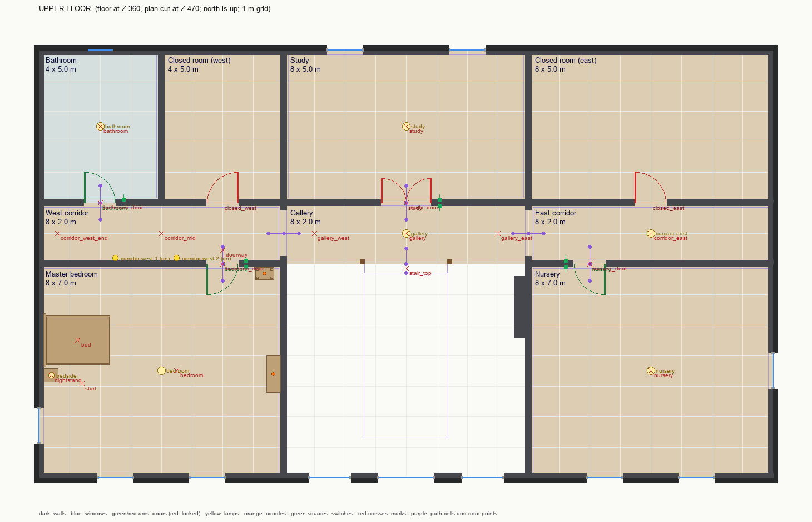
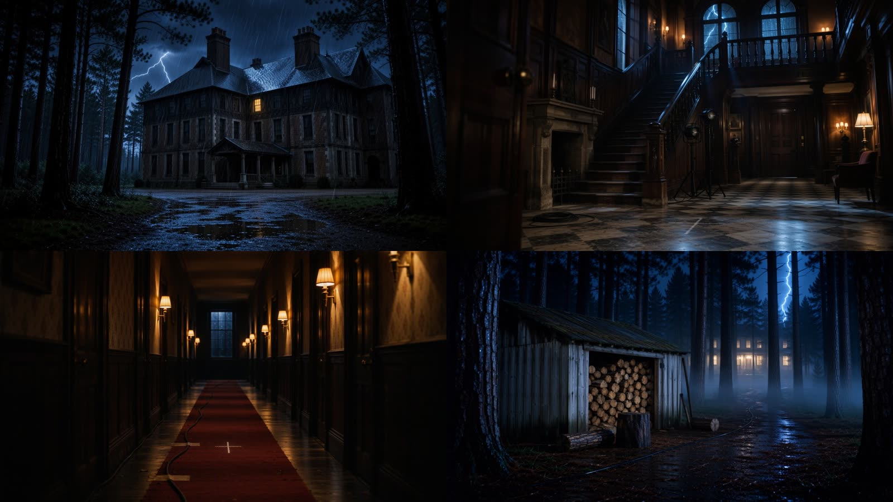

Day 1 Thursday 12 November
GLEMT: the idea, and the story before any code
2 pictures 4 failures 8 min read
The idea
GLEMT (Danish for "forgotten") is a first-person horror game. The developer's brief came in a handful of short messages, and together they say this:
- The player is caught in a nightmare that repeats. He dies, wakes, and is still inside it, as if he will sleep for ever. Each new round begins like a film take: "Action".
- He has just bought an old mansion. It belonged to a film director who died long ago, and the director's ghost is what hunts him.
- He carries a camera. Held up, its screen shows the ghost that the eye cannot see.
- Behind the house there is a forest to walk, with firewood to fetch. An on-screen guide always says what to do next and what to avoid.
- The story must be worked out in full before any code is written, and the first ten minutes must be the best ten.
The thread that ties it together
The agent's job was to find the thread through those pieces. It is one line: he was never in a picture, and you have a camera.
A film director lived in the house and was known for never being seen; no photograph of him exists. He died there with the last scene of his last film unshot: the scene in which the ghost is finally seen. He is still shooting it. Whoever sleeps in the house is cast in it: "Action", the ghost comes, the sleeper dies, "Cut", and the same night starts again on the same clock. Nobody ever turned round and looked at him.
Three rules carry the whole game:
- You cannot see him. The camera can. Its screen shows the room as the lens sees it, with him in it.
- While he is in the camera's picture, he cannot move. Lower it and he comes.
- Every take is the same; your pictures are what you keep. The photographs that survive each death are the missing shots of his film. At the end the player cuts them in and decides how the film ends.
That is also where the theme sits. The cut that matters is the player's own: what goes into the film and what does not.
Story before code
The story was written down in full before a line of gameplay code: who everyone is, what really happened, every page, every spoken line, both endings. A first draft had a different sleeper and a different creature. An independent agent, asked to be a hard story editor, read it and found its holes; the developer then set the premise above, and the draft was rewritten on it. What survived from the first draft is the clock that never changes, a canvas stand-in dummy that now lies wherever the player died last, and four lessons from the editor's read:
- the theme has to land inside five minutes;
- a new take has to start in under three seconds;
- dying must not cost progress;
- film words are a dead man's habit, never a joke the game makes.
How the work is split
One main session writes the game (the camera, the ghost's rule, the takes, the guide). Around it, agents work in parallel, each with a written brief and its own folder:
- the house is data: a room plan in Python becomes a file, and the game builds walls, doors, lamps, stairs and the ghost's paths from it when the map opens;
- furniture and building materials come from Poly Haven (CC0), 75 pieces, each recorded with its source for the list of sourced assets;
- pictures come from the image model on this PC, and 3D models from Rodin, made from those pictures;
- sounds are synthesised by our own scripts.


The look to aim for
Before any room is dressed, the image model was asked for the house as a film would show it. These pictures are direction only; none of them is in the game.
PromptA large old manor house built around 1900, seen from outside at night in a violent storm in a dense forest of tall dark pine trees. Three…185 words
A large old manor house built around 1900, seen from outside at night in a violent storm in a dense forest of tall dark pine trees. Three storeys of dark weathered stone and timber, steep slate roofs with gables and tall brick chimneys, a covered front porch with steps, rows of tall narrow windows. Every window is dark except a single window on the upper floor that glows a warm yellow. Driving rain slants across the picture, the pines bend in the wind, a fork of lightning in the low clouds behind lights the wet roofs and the trunks a cold blue-white for a moment; a muddy gravel drive with puddles leads from the foreground to the porch between the trees. Wide shot from the edge of the forest, the house in the middle of the frame, dark sky above it with space for a title. Photographic, real materials, a still from a 1970s horror film, 35mm film grain, deep blacks, cold blue night with the one warm window. No people, no cars, no animals. No text, no letters, no numerals, no logos, no signs.


PromptThe entrance hall of an old manor house built around 1900, at night, a tall double-height room seen from near the front door. A great dark…184 words
The entrance hall of an old manor house built around 1900, at night, a tall double-height room seen from near the front door. A great dark oak staircase with carved newel posts and turned balusters rises along the side wall to a gallery that runs round the upper floor. A stone fireplace, unlit, a floor of worn black and white marble tiles, dark wood panelling, a heavy closed front door. Tall arched windows on the stair landing, rain streaming down the glass, a flash of lightning outside throwing cold blue-white light and long window shadows across the stair and the floor. The house was rented for a film in the 1970s: a 1970s film spotlight on a black tripod stand stands by the stair, switched off, coils of thick black cable lie on the tiles, and a chalk cross is drawn on the floor at the foot of the stair. Dust in the air. Dark and moody. Photographic, real materials, a still from a 1970s film, 35mm film grain. No people. No text, no letters, no numerals, no logos, no brand names, no labels.
PromptThe long upstairs corridor of an old manor house built around 1900, at night, seen from one end, the corridor running away from the camera.…179 words
The long upstairs corridor of an old manor house built around 1900, at night, seen from one end, the corridor running away from the camera. Dark wood panelling to waist height and faded patterned wallpaper above it, a worn red runner carpet over dark floorboards, closed panelled doors along both sides, a row of small brass wall lamps with pleated fabric shades giving a dim warm light in pools along the walls, the far end dark, a tall window at the very end with rain on the glass and a faint cold light. The house was rented for a film in the 1970s: a thick black cable runs along the skirting board and is taped across the runner, and a small chalk cross is drawn on the carpet in the middle of the corridor. Dust in the air. Dark and moody, the darkness growing towards the far end. Photographic, real materials, a still from a 1970s film, 35mm film grain. No people. No text, no letters, no numerals, no logos, no brand names, no labels, no pictures with faces.
PromptAn old woodshed among tall pine trees behind a manor house, at night in the rain. A small open-fronted shed of weathered grey vertical…156 words
An old woodshed among tall pine trees behind a manor house, at night in the rain. A small open-fronted shed of weathered grey vertical planks with a low sloping roof of moss-covered boards, its inside stacked to the roof with split firewood logs, a heavy chopping block standing in front of it, a few logs lying on the wet ground. A muddy path leads to it between the dark straight trunks of the pines, fog lies low between the trees, rain falls through the beams of light. The only light is a flash of lightning in the sky above the trees and, far behind between the trunks, the faint warm glow of the house's windows. A black film cable runs along the path. Photographic, real materials, a still from a 1970s horror film, 35mm film grain, cold blue night, dark and moody. No people, no animals. No text, no letters, no numerals, no logos, no signs.
What failed so far
State at a quarter to five
The house stands as a grey box and can be walked: doors swing, switches work, candles light. The camera, the ghost and the first take are next.